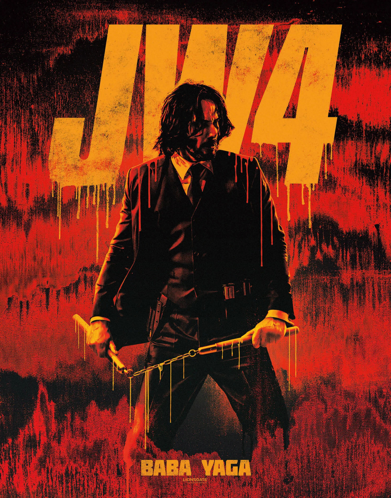
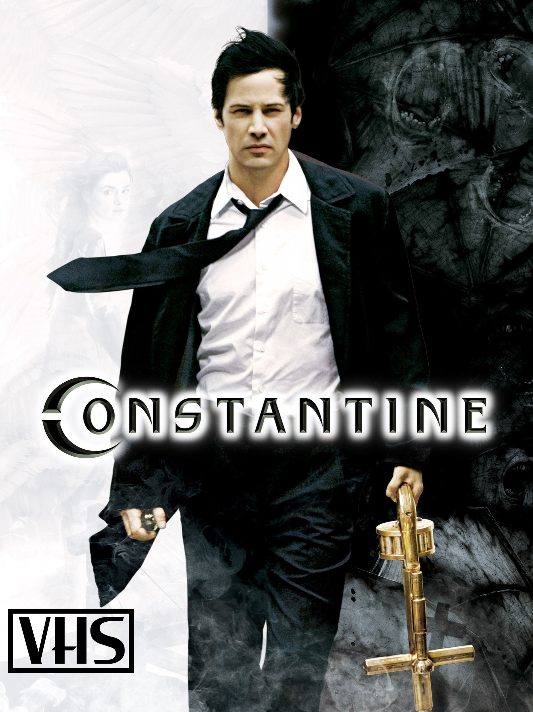
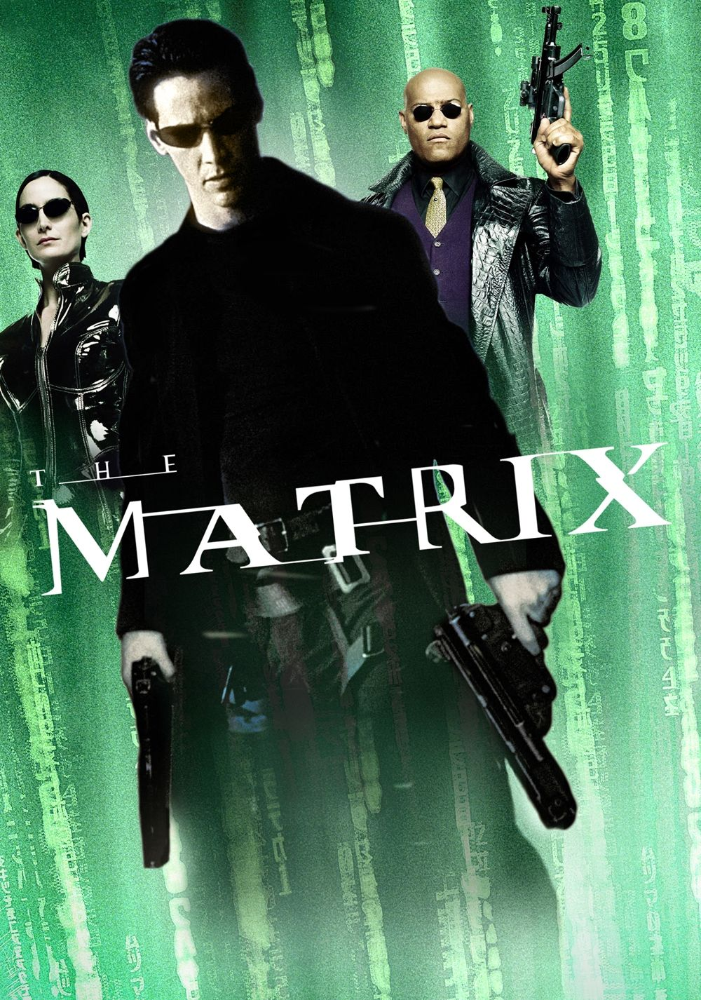
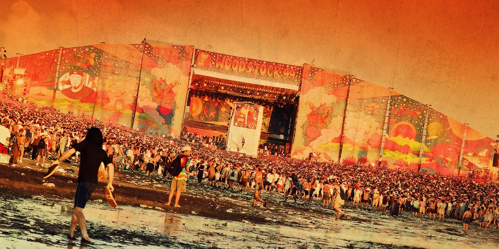

Чтобы обрести свободу, киллер-изгой бросает вызов Правлению кланов. Самая зрелищная часть стильной экшен-саги.
Смотреть

Хакер Нео узнает, что его мир — виртуальный. Выдающийся экшен, доказавший, что зрелищное кино может быть умным.
Смотреть
«Вудсток» охватывает бесконтрольное насилие и хаос. Док о трагических событиях 1999 года глазами очевидцев
СмотретьАктер Киану Чарльз Ривз родился 2 сентября 1964 года в Бейрусе, Ливан. Его мать была танцовщицей и моделью, а отец - геологом. Ривз провел свое детство в Торонто, Онтарио, Канада, где он заинтересовался актерством в раннем возрасте.
Ривз начал свою актерскую карьеру в 1980-х годах, снявшись в нескольких телевизионных сериалах и фильмах, включая “Молодая кровь” (1986) и “Невероятные приключения Билла и Теда” (1989). Он стал известен благодаря своей роли в фильме “На гребне волны” (1991), а также за свою работу в научно-фантастических фильмах “Матрица” (1999-2003).
На протяжении своей карьеры Ривз демонстрировал талант как в драматических, так и в комедийных ролях. Среди его самых известных фильмов можно отметить “Дракула” (1992), “Адвокат дьявола” (1997), “Сладкий ноябрь” (2001) и “Дом у озера” (2006).
В последнее время Ривз снялся в таких успешных фильмах, как “Джон Уик” (2014 - настоящее время) и “Профессионал” (2018).
Помимо актерской карьеры, Ривз известен своим альтруистическим поведением. Он активно занимается благотворительностью и является послом доброй воли ООН по вопросам ВИЧ и СПИДа. Кроме того, он поддерживает различные организации, которые занимаются помощью больным раком и бездомным.
В личной жизни Ривз пережил много потерь, включая смерть его сестры от лейкемии и его подруги, которая погибла в автокатастрофе. Несмотря на это, он остается скромным и отзывчивым человеком, предпочитая вести уединенный образ жизни.